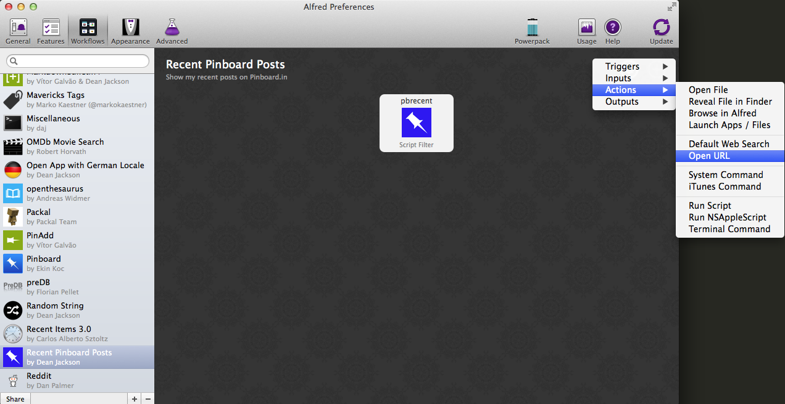

Tutorial Part 1: Creating a Basic Pinboard Workflow¶
In which we build an Alfred workflow to view recent posts to Pinboard.in.
Note
To use workflows, you must own Alfred’s Powerpack.
Creating a new Workflow¶
First, create a new, blank workflow in Alfred 2’s Preferences, under the Workflows tab:

Describing your Workflow¶
When the info dialog pops up, give your workflow a name, a Bundle Id, and possibly a description.
Important
The Bundle Id is essential: it’s the unique name used by Alfred and Alfred-Workflow internally to identify your workflow. Alfred-Workflow won’t work without it.
You can also drag an image to the icon field to the left to make your workflow pretty (Alfred will use this icon to show your workflow actions in its action list). I grabbed a free Pinboard icon.

Adding a Script Filter¶
The next step is to add a Script Filter. Script Filters receive input from Alfred (the query entered by the user) and send results back to Alfred. They should run as quickly as possible because Alfred will try to call the Script Filter for every character typed into its query box:

And enter the details for this action (the Escaping options don’t matter at the moment because our script currently doesn’t accept a query):

Choose a Keyword, which you will enter in Alfred to activate your workflow. At the moment, our Script Filter won’t take any arguments, so choose No Argument. The Placeholder Title and Subtext are what Alfred will show when you type the Keyword:

The “Please Wait” Subtext is what is shown when your workflow is working, which in our case means fetching data from pinboard.in.
Very importantly, set the Language to /bin/bash.
The Script field should contain:
python pinboard.py
We’re going to create the pinboard.py script in a second. The Escaping
options don’t matter for now because our Script Filter doesn’t accept an
argument.
Note
You can choose /usr/bin/python as the Language and paste
your Python code into the Script box, but this isn’t the best idea.
If you do this, you can’t run the script from the Terminal (which can be helpful when developing/debugging), and you can’t as easily use a proper code editor, which makes debugging difficult: Python always tells you which line an error occurred on, but the Script field doesn’t show line numbers, so lots of counting is involved.
Now Alfred has created the workflow, we can open it up and add our script. Right-click on your workflow in the list on the left and choose Show in Finder.

The directory will show one or two files (depending on whether or not you chose an icon):

At this point, download the latest release of Alfred-Workflow from GitHub,
extract it and copy the workflow directory into your workflow’s directory:

Now we can start coding.
Writing your Python script¶
Using your text editor of choice [1], create a new text file and save it in your
workflow directory as pinboard.py (the name we used when setting up the
Script Filter).
Add the following code to pinboard.py (be sure to change API_KEY to
your pinboard API key. You can find it on the settings/password page):
1 2 3 4 5 6 7 8 9 10 11 12 13 14 15 16 17 18 19 20 21 22 23 24 25 26 27 28 29 30 31 32 33 34 35 | # encoding: utf-8
import sys
from workflow import Workflow, ICON_WEB, web
API_KEY = 'your-pinboard-api-key'
def main(wf):
url = 'https://api.pinboard.in/v1/posts/recent'
params = dict(auth_token=API_KEY, count=20, format='json')
r = web.get(url, params)
# throw an error if request failed
# Workflow will catch this and show it to the user
r.raise_for_status()
# Parse the JSON returned by pinboard and extract the posts
result = r.json()
posts = result['posts']
# Loop through the returned posts and add an item for each to
# the list of results for Alfred
for post in posts:
wf.add_item(title=post['description'],
subtitle=post['href'],
icon=ICON_WEB)
# Send the results to Alfred as XML
wf.send_feedback()
if __name__ == u"__main__":
wf = Workflow()
sys.exit(wf.run(main))
|
All being well, our workflow should now work. Fire up Alfred, enter your keyword and hit ENTER. You should see something like this:

If something went wrong (e.g. an incorrect API key, as in the screenshot), you should see an error like this:

If Alfred shows nothing at all, it probably couldn’t run your Python script at all. You’ll have to open the workflow directory in Terminal and run the script by hand to see the error:
python pinboard.py
Adding workflow actions¶
So now we can see a list of recent posts in Alfred, but can’t do anything with them. We’re going to change that and make the items “actionable” (i.e. you can hit ENTER on them and something happens, in this case, the page will be opened in your browser).
Add the highlighted lines (27–28) to your pinboard.py file:
1 2 3 4 5 6 7 8 9 10 11 12 13 14 15 16 17 18 19 20 21 22 23 24 25 26 27 28 29 30 31 32 33 34 35 36 37 | # encoding: utf-8
import sys
from workflow import Workflow, ICON_WEB, web
API_KEY = 'your-pinboard-api-key'
def main(wf):
url = 'https://api.pinboard.in/v1/posts/recent'
params = dict(auth_token=API_KEY, count=20, format='json')
r = web.get(url, params)
# throw an error if request failed
# Workflow will catch this and show it to the user
r.raise_for_status()
# Parse the JSON returned by pinboard and extract the posts
result = r.json()
posts = result['posts']
# Loop through the returned posts and add an item for each to
# the list of results for Alfred
for post in posts:
wf.add_item(title=post['description'],
subtitle=post['href'],
arg=post['href'],
valid=True,
icon=ICON_WEB)
# Send the results to Alfred as XML
wf.send_feedback()
if __name__ == u"__main__":
wf = Workflow()
sys.exit(wf.run(main))
|
valid=True tells Alfred that the item is actionable and arg is the
value it will pass to the next action (in this case a URL).
Go back to Alfred’s Preferences and add an Open URL action:
Then enter {query} as the URL:

When you hover your mouse over the Script Filter, you’ll notice a small “nub” appears on the right-hand side:

Click and hold on this, and drag a connection to the Open URL action:

Now run your workflow again in Alfred, select one of the results and hit ENTER. The post’s webpage should open in your default browser.
Improving performance and not getting banned¶
The terms of use of the Pinboard API specifically limit calls to the recent
posts method to 1 call/minute. As it’s
likely you’ll call your workflow more often than that, we need to cache the
results from the API and use the cached data for at least a minute.
Alfred-Workflow makes this a doddle with its
cached_data() method.
Go back to pinboard.py and make the following changes:
1 2 3 4 5 6 7 8 9 10 11 12 13 14 15 16 17 18 19 20 21 22 23 24 25 26 27 28 29 30 31 32 33 34 35 36 37 38 39 40 41 42 43 44 45 | # encoding: utf-8
import sys
from workflow import Workflow, ICON_WEB, web
API_KEY = 'your-pinboard-api-key'
def get_recent_posts():
"""Retrieve recent posts from Pinboard.in
Returns a list of post dictionaries.
"""
url = 'https://api.pinboard.in/v1/posts/recent'
params = dict(auth_token=API_KEY, count=20, format='json')
r = web.get(url, params)
# throw an error if request failed
# Workflow will catch this and show it to the user
r.raise_for_status()
# Parse the JSON returned by pinboard and extract the posts
result = r.json()
posts = result['posts']
return posts
def main(wf):
# Retrieve posts from cache if available and no more than 60
# seconds old
posts = wf.cached_data('posts', get_recent_posts, max_age=60)
# Loop through the returned posts and add an item for each to
# the list of results for Alfred
for post in posts:
wf.add_item(title=post['description'],
subtitle=post['href'],
arg=post['href'],
valid=True,
icon=ICON_WEB)
# Send the results to Alfred as XML
wf.send_feedback()
|
We’ve moved the code that retrieves the data from the API to a separate
function (get_recent_posts(), line 9) and instead we ask
Workflow.cached_data() (line 33)
for the data cached under the name posts (the first argument).
cached_data() will first check its cache for
data saved under posts and return those data
if they’re less than max_age seconds old. If the data are older or don’t
exist, it will call the get_recent_posts() function passed as the second
parameter, cache the data returned by that function under the name posts
and return it.
So now we won’t get banned by Pinboard for hammering the API, and as a bonus,
the workflow is now blazingly fast when the data are in its cache. For this
reason, it’s probably a good idea to increase max_age to 300 or 600 seconds
(5 or 10 minutes) or even more—depending on how often you add new posts
to Pinboard—to get super-fast results more often.
Making the posts searchable¶
What if you’re looking for a specific post? Who’s got time to scroll through a list of 20 results? Let’s make them searchable.
First, update the Script Filter settings. Next to Keyword, change
No Argument to Argument Optional and select with space.
with space means that when you hit ENTER or TAB on your workflow
action, Alfred will add a space after it, so you can start typing your query
immediately. Then add "{query}" in the Script text field. {query}
will be replaced by Alfred with whatever you’ve typed after the keyword. Finally,
set the Escaping options to:
- Backquotes
- Double Quotes
- Dollars
- Backslashes
and nothing else. This ensures that the query reaches your Python script
unmolested by bash. Your Script Filter settings should now look like
this:

First, we’ll set the script to get 100 recent posts from Pinboard (the maximum allowed) in line 16 and to cache them for 10 minutes in line 33 (or use 300 seconds for 5 minutes if you’re a heavy Pinboardista):
1 2 3 4 5 6 7 8 9 10 11 12 13 14 15 16 17 18 19 20 21 22 23 24 25 26 27 28 29 30 31 32 33 34 35 36 37 38 39 40 41 42 43 44 45 46 47 48 49 50 | # encoding: utf-8
import sys
from workflow import Workflow, ICON_WEB, web
API_KEY = 'your-pinboard-api-key'
def get_recent_posts():
"""Retrieve recent posts from Pinboard.in
Returns a list of post dictionaries.
"""
url = 'https://api.pinboard.in/v1/posts/recent'
params = dict(auth_token=API_KEY, count=100, format='json')
r = web.get(url, params)
# throw an error if request failed
# Workflow will catch this and show it to the user
r.raise_for_status()
# Parse the JSON returned by pinboard and extract the posts
result = r.json()
posts = result['posts']
return posts
def main(wf):
# Retrieve posts from cache if available and no more than 600
# seconds old
posts = wf.cached_data('posts', get_recent_posts, max_age=600)
# Loop through the returned posts and add an item for each to
# the list of results for Alfred
for post in posts:
wf.add_item(title=post['description'],
subtitle=post['href'],
arg=post['href'],
valid=True,
icon=ICON_WEB)
# Send the results to Alfred as XML
wf.send_feedback()
if __name__ == u"__main__":
wf = Workflow()
sys.exit(wf.run(main))
|
Then we need to add the ability to receive the query from Alfred and filter our posts based on it:
1 2 3 4 5 6 7 8 9 10 11 12 13 14 15 16 17 18 19 20 21 22 23 24 25 26 27 28 29 30 31 32 33 34 35 36 37 38 39 40 41 42 43 44 45 46 47 48 49 50 51 52 53 54 55 56 57 58 59 60 61 62 63 64 65 66 67 68 69 | # encoding: utf-8
import sys
from workflow import Workflow, ICON_WEB, web
API_KEY = 'your-pinboard-api-key'
def get_recent_posts():
"""Retrieve recent posts from Pinboard.in
Returns a list of post dictionaries.
"""
url = 'https://api.pinboard.in/v1/posts/recent'
params = dict(auth_token=API_KEY, count=100, format='json')
r = web.get(url, params)
# throw an error if request failed
# Workflow will catch this and show it to the user
r.raise_for_status()
# Parse the JSON returned by pinboard and extract the posts
result = r.json()
posts = result['posts']
return posts
def search_key_for_post(post):
"""Generate a string search key for a post"""
elements = []
elements.append(post['description']) # title of post
elements.append(post['tags']) # post tags
elements.append(post['extended']) # description
return u' '.join(elements)
def main(wf):
# Get query from Alfred
if len(wf.args):
query = wf.args[0]
else:
query = None
# Retrieve posts from cache if available and no more than 600
# seconds old
posts = wf.cached_data('posts', get_recent_posts, max_age=600)
# If script was passed a query, use it to filter posts
if query:
posts = wf.filter(query, posts, key=search_key_for_post)
# Loop through the returned posts and add an item for each to
# the list of results for Alfred
for post in posts:
wf.add_item(title=post['description'],
subtitle=post['href'],
arg=post['href'],
valid=True,
icon=ICON_WEB)
# Send the results to Alfred as XML
wf.send_feedback()
if __name__ == u"__main__":
wf = Workflow()
sys.exit(wf.run(main))
|
Looking at main() first, we add a query variable (lines 40–44).
Because our Script Filter can run with or without an argument, we test to see
if any were passed to the script using via args
attribute of Workflow, and grab the first one if there were
(this will be the contents of {query} from the Script Filter).
Using args is similar to accessing
sys.argv[1:] directly, but additionally decodes the arguments to Unicode
and normalizes them. It also enables “Magic” arguments.
After getting all the posts from the cache or Pinboard, we then filter them
using the Workflow.filter() method
if there is a query (lines 51–52).
Workflow.filter() implements an
Alfred-like search algorithm (e.g. “am” will match “Activity Monitor” as well
as “I Am Legend”), but it needs a string to search. Therefore, we write the
search_key_for_post() (line 29) function that will build a searchable string
for each post, comprising its title, tags and description (in that order).
Important
In the last line of search_key_for_post(), we join the elements with
u' ' (a Unicode space), not ' ' (a byte-string space). The
web.Response.json() method returns
Unicode (as do most Alfred-Workflow methods and functions), and mixing
Unicode and byte-strings will cause a fatal error if the byte-string
contains non-ASCII characters. In this particular situation, using a
byte-string space wouldn’t cause any problems (a space is ASCII), but
avoiding mixing byte-strings and Unicode is a very good habit to get into.
When coding in Python 2, you have to be aware of which strings are Unicode and which are encoded (byte) strings. Best practice is to use Unicode internally and decode all text to Unicode when it arrives in your workflow (from the Web, system etc.).
Alfred-Workflow’s APIs use Unicode and it works hard to hide as much of
the complexity of working with byte-strings and Unicode as possible, but
you still need to manually decode encoded byte-strings from other sources
with Workflow.decode() to avoid
fatal encoding errors.
See Encoded strings and Unicode in the User Guide for more information on dealing with encoded (byte) strings and Unicode in workflows.
Improving the search results¶
If you’ve been trying out the workflow, you’ve probably noticed that your queries
match a lot of posts they really shouldn’t. The reason for this is that,
by default, Workflow.filter() matches
anything that contains all the characters of query in the same order,
regardless of case. To fix this, we’ll add a min_score argument to
Workflow.filter(). Change the line:
posts = wf.filter(query, posts, key=search_key_for_post)
to:
posts = wf.filter(query, posts, key=search_key_for_post, min_score=20)
and try the workflow again. The junk results should be gone. You can adjust
min_score up or down depending on how strict you want to be with the results.
What now?¶
So we’ve got a working workflow, but it’s not yet ready to be distributed to other users (we can’t reasonably ask users to edit the code to enter their API key, especially as they’d have to do it again after updating the workflow to a new version). We’ll turn what we’ve got into a distribution-ready workflow in the second part of the tutorial.
Further reading¶
For more information about writing Alfred workflows, try the following:
- A good tutorial on Alfred workflows for beginners by Richard Guay
- The Alfred Forum. It’s a good place to find workflows and the Workflow Help & Questions forum forum is the best place to get help with writing workflows.
To learn more about coding in Python, try these resources:
- The Python Tutorial is a good place to start learning (more) about Python programming.
- Dive into Python by the dearly departed (from the Web) Mark Pilgrim is a wonderful (and free) book.
- Learn Python the Hard Way isn’t as hard as it sounds. It’s actually rather excellent, in fact.
| [1] | Do not use TextEdit to edit code. By default it uses “smart” quotes, which will break code. If you have macOS 10.7 or later, TextMate is an excellent and free editor. TextWrangler is another good, free editor for macOS (supports 10.6). |